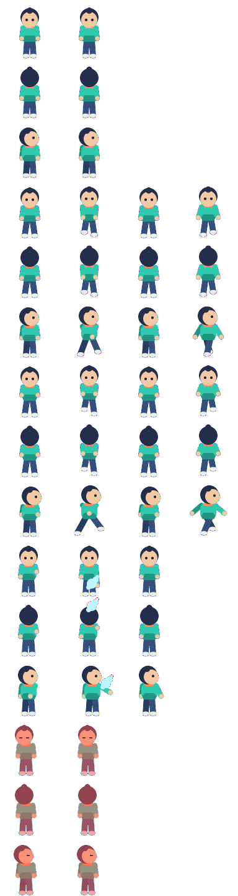

シート
コマを横に並べた1枚の絵。
sheet
★★★☆☆ / PLAYABLE
1枚に並んだ絵(スプライトシート)から、SubImage で1コマだけ切り出して描きます。タイマーで切り出す位置を進めれば、キャラクターが歩いて見えます。
このコースも LEVEL 01 の Update（数字）→ Draw（絵） のくり返しの上にあります。ここでは Draw の“描き方”を一段深く扱います。
PLAYABLE / LIVE GO + マウス
コマ送りと再生/停止を切り替えます。光っている枠が、今 SubImage で切り出しているコマです。
DEEP DIVE / FRAMES
パラパラ漫画と同じ。少しずつ違うポーズを、一定時間ごとに切り替えるだけです。SubImage はシートの中の「切り取り枠」。枠を右へずらすと、次のコマが出ます。速く歩くときは切り替えも速く。
コマを横に並べた1枚の絵。
sheet
今のコマだけを枠で抜きます。
SubImage(rect)
一定間隔でコマを進めます。
tick / hold
TRY IT / SUBIMAGE
コマ送りと再生/停止を切り替えます。光っている枠が、今 SubImage で切り出しているコマです。
IN THE REAL GAME
タイマーでコマ番号を進め、その枠を SubImage で切り出して描きます。
// One 96×96 cell from the Ebi Tenjiroh atlas.
const fw, fh = 96, 96
i := (tick / hold) % framesInRow // which column (frame)
x, y := i*fw, row*fh // row = action + facing
rect := image.Rect(x, y, x+fw, y+fh)
frame := atlas.SubImage(rect).(*ebiten.Image)
screen.DrawImage(frame, op)無料アセット / CC0
この工房で歩かせている主人公・海老・天次郎（Ebi Tenjiroh）の一枚絵アトラスです。歩行・走行・攻撃・やられを、下(front)・上(back)・横(side)の3方向ぶん収録。1コマ 96×96px。左向きは横向きを左右反転して使います。CC0 なので、あなたのゲームに自由に使えます。
行=アクション×向き、列=コマ。JSONに各コマの矩形(x,y,w,h)とおすすめfpsが入っています。

WHY A SHEET?
1枚に並べると読み込みも切り替えも軽くなります。
WHY A TIMER?
移動が速いほど切り替えも速くすると、足が滑りません。
TRY NEXT
左右反転(ScaleX=-1)で、進む向きに合わせて歩かせよう。
FEEDBACK
{kind=link}